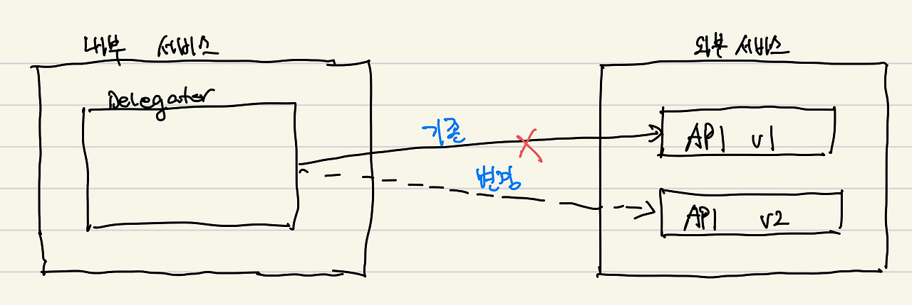
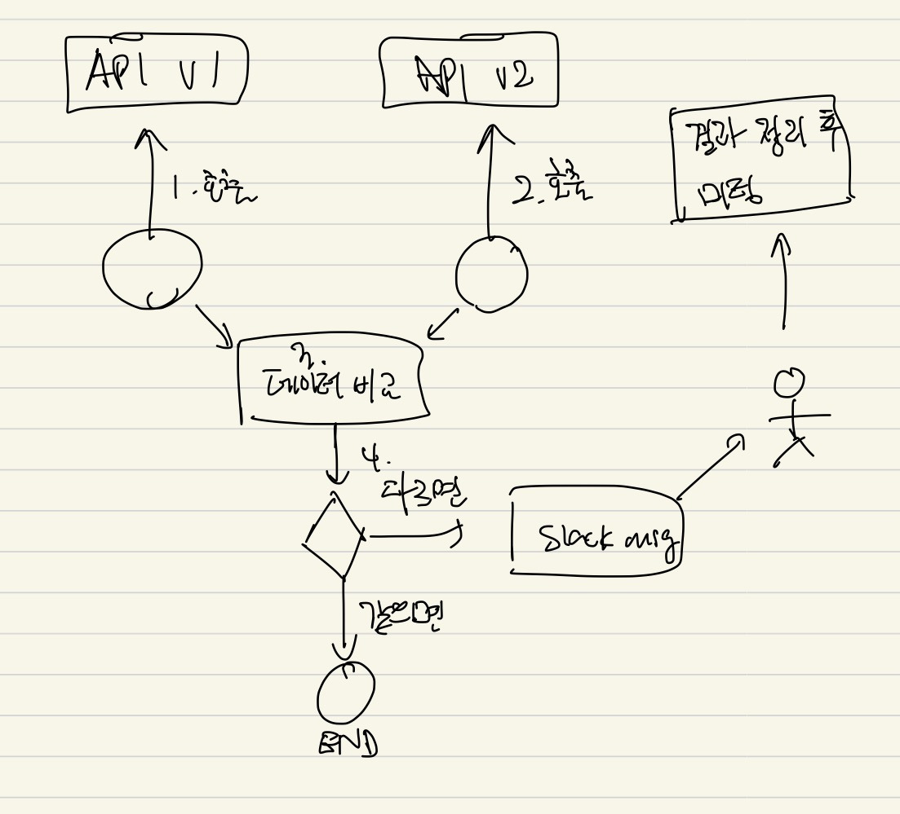
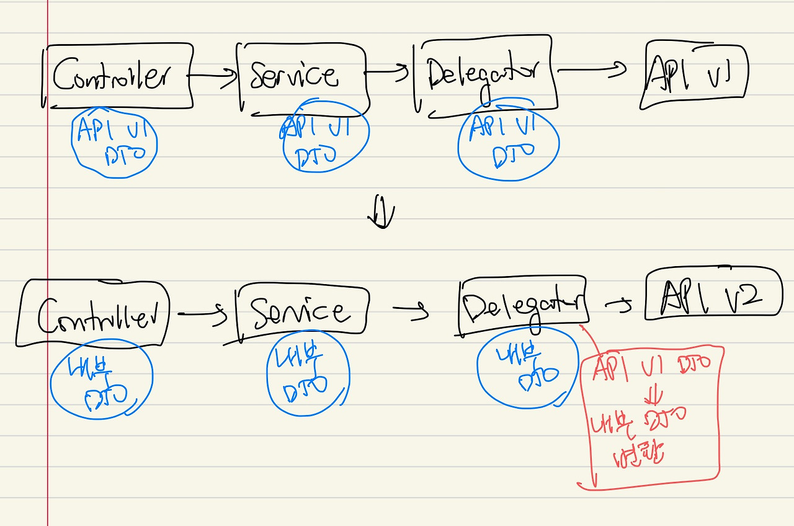

MSA 환경에서는 주로 API 호출을 통해 타 서비스와 통신을 주고 받습니다. 타 서비스에서 제공하는 API 의 스펙이 변경되면 이 API 에 의존하고 있는 내부 서비스도 맞춰서 변경을 해주어야 합니다. 단순히 생각하면 기존 API 로의 호출을 끊고, 버전업이 된 API 로 호출하기만 하면 될 것 같습니다. 아래 그림처럼요.

하지만 이렇게 단순하지는 않았고, 좀 더 복잡했습니다. API 를 교체하는 방법에 대해 한번 정리해보고자 합니다.
들어가기에 앞서
용어 정리를 먼저 하려고 한다.
- 외부 서비스에서 제공되던 기존 API 는 "API v1"
- 외부 서비스에서 제공될 신규, 버전업된 API 는 "API v2"
상황에 대한 이해
API 를 교체해야 했던 당시 상황은 다음과 같다.
- 상황 1. API v1 의 DTO 가 내부 서비스 전체에서 사용되고 있었다. (API v2 의 DTO 로 교체하기 위해서는 내부 서비스 전체를 수정해야 함)
- 상황 2. 내부 서비스 대부분의 기능이 API v1 에 의존하고 있었다. (장애가 발생하면 임팩트가 큼)
- 상황 3. API v1 의 DTO 에는 100개가 넘는 필드가 존재하며 객체의 구조가 상당히 복잡함 (v1 과 v2 DTO 를 비교하기 어려움)
API 교체 전략
상황이 어떻든 API 교체는 해야 하니.. 다음과 같이 전략을 세워보았다.
- API v1 에 의존하고 있는 내부 서비스 코드를 분석하여 영향도가 낮은 순부터 리스트 업 한다.
- 본격적으로 API v2 로 교체하기 이전에 데이터 정합성 모니터링을 위해 API v1 과 v2 를 서로 비교할 수 있는 코드를 작성한다.
- 데이터 정합성 과정에서 데이터가 다른 부분이 발생하면 슬랙으로 메시지를 발생한다.
- 하루동안 모니터링을 하고 이슈가 없으면 API v1 에서 v2 로 조금씩 교체한다. API v2 의 호출 빈도를 1%에서 점점 늘려 100%까지 전체 교체한다.
영향도가 크지 않았다면 한번에 모든 코드에 대해 API 교체를 진행했을텐데, 장애가 나면 영향도가 꽤나 컸기 때문에 안정성을 위해 한 부분씩 교체해나갔다.
내부 전용 DTO
또한, API v1 의 DTO 가 내부 서비스 전체에서 사용되고 있었기 때문에 내부 서비스 전용 DTO 를 별도로 만들었다. 이를 통해 얻을 수 있는 장점으로는 추후 v3, v4 로 버전업이 될 때 v3, v4 의 DTO 에서 내부 전용 DTO 로 변환만 잘 해주면 되기 때문이다. 코드의 변경점이 줄어들어 유지보수 비용이 많이 줄어들 수 있다.

데이터 정합성 체크
API v1 에서 제공하는 필드는 100여개가 넘게 있었고 모든 필드가 v2 에서 1:1 맵핑이 되진 않았다. 또한, 그 데이터 자체도 다를 수 있다고 전달받았기 때문에 데이터 정합성을 체크하는 과정은 필수였다. 당시에는 객체 비교를 위해 알고있는 라이브러리가 없어 한땀한땀 비교하는 로직을 구현해주었다. 예를 들면 다음과 같다.
public boolean isDifferent(ApiV1Dto v1Dto, ApiV2Dto v2Dto) {
if (v1Dto.getA() != v2Dto.getA()) {
return true;
}
if (v1Dto.getB() != v2Dto.getB()) {
return true;
}
...
return false;
}또한, 두 객체간 데이터가 다르면 슬랙 메시지로 알럿 메시지를 전송하여 바로 확인할 수 있도록 만들었다.

데이터가 다른 경우에는
API v1 과 v2 를 제공하는 팀에 미팅요청을 하여 데이터가 다른 경우를 설명하고, v1 에서 제공하는 데이터를 v2 에서도 동일하게 제공받을 수 있도록 요청하였다. 커뮤니케이션 하는 이 과정이 꽤 많이 힘들었다. 내용을 정리해서 잘 전달하는 것부터, v2 에서는 제공할 수 없다는 피드백을 받았을 때, 새로운 솔루션을 찾아내는 것도 힘들었다. 최대한 v2 에서 동일한 데이터를 전달받을 수 있도록 요청했고, 그렇게 할 수 없는 경우에는 다른 API 에서 동일한 데이터를 전달받을 수 있도록 요청했다.
장애 발생 지점
List 형태의 데이터에 대해서는 그 개수가 같은지 다른지에 대해서만 확인하는 로직을 작성해두었었고, 값 자체를 비교하진 않았다. 개수가 동일하면 값은 똑같겠지 라는 안일한 생각이었다. 하지만 여기가 장애 발생 지점이었고, 개수는 동일하지만 데이터가 다른 경우가 발생했다. 데이터 정합성 하는 과정에서는 개수가 동일했기 때문에 문제가 되지 않았지만 API v2 로 이관하는 과정에서 점점 문제가 발생했다.
결국 롤백과 데이터 보정 작업을 거쳐 장애 대응을 했고, 데이터 정합성을 확인하는 로직을 전면 수정했다.
API v2 로 서서히 교체하기
API v2 로 한번에 교체하면 많이 위험할 것 같다는 생각이 들어, 1%, 2% 등 천천히 옮겨가고자 했다. 이를 위해 1~100 사이의 랜덤 숫자를 생성해서 특정 % 내에 포함되면 API v2 를, 아니면 API v1 을 호출하도록 만들었다.
특정 % 를 설정하기 위해서는 코드 내에 하드코딩 해두어야 하지만 이렇게 하면 단점이 퍼센티지를 변경할 때마다 배포를 새로 해주어야 한다. 따라서 배포를 하지 않고 다이나믹하게 컨트롤 하기 위해 s3 를 활용했고, s3 에서 값을 지속적으로 읽으면서 사용하도록 구현했다. 예시는 다음과 같다.
public void abTest() {
var random = (int)(Math.random() * 100);
var n = getNfromS3();
if (random < n) {
// call API v2
} else {
// call API v1
}
}코드 정리
v2 로 이관이 완료되면 v1 관련 코드와 데이터 정합성을 체크하는 코드를 제거했다.
느낀점
처음으로 이런 과정을 혼자 진행하다 보니 많이 벅찼던 기억이다. 도망치고 싶었는데.. 그래도 마무리는 잘 해야 하니까 라는 생각으로 작업을 했던 것 같다.
아쉬웠던 점으로는 데이터 정합성을 체크하는 부분이었고 만족스러웠던 점으로는 내부 서비스에서 사용할 수 있는 전용 DTO 를 만들어두어 추후 v3, v4 로 업그레이드할 때 유지보수 비용을 최소화했던 점이 있다.